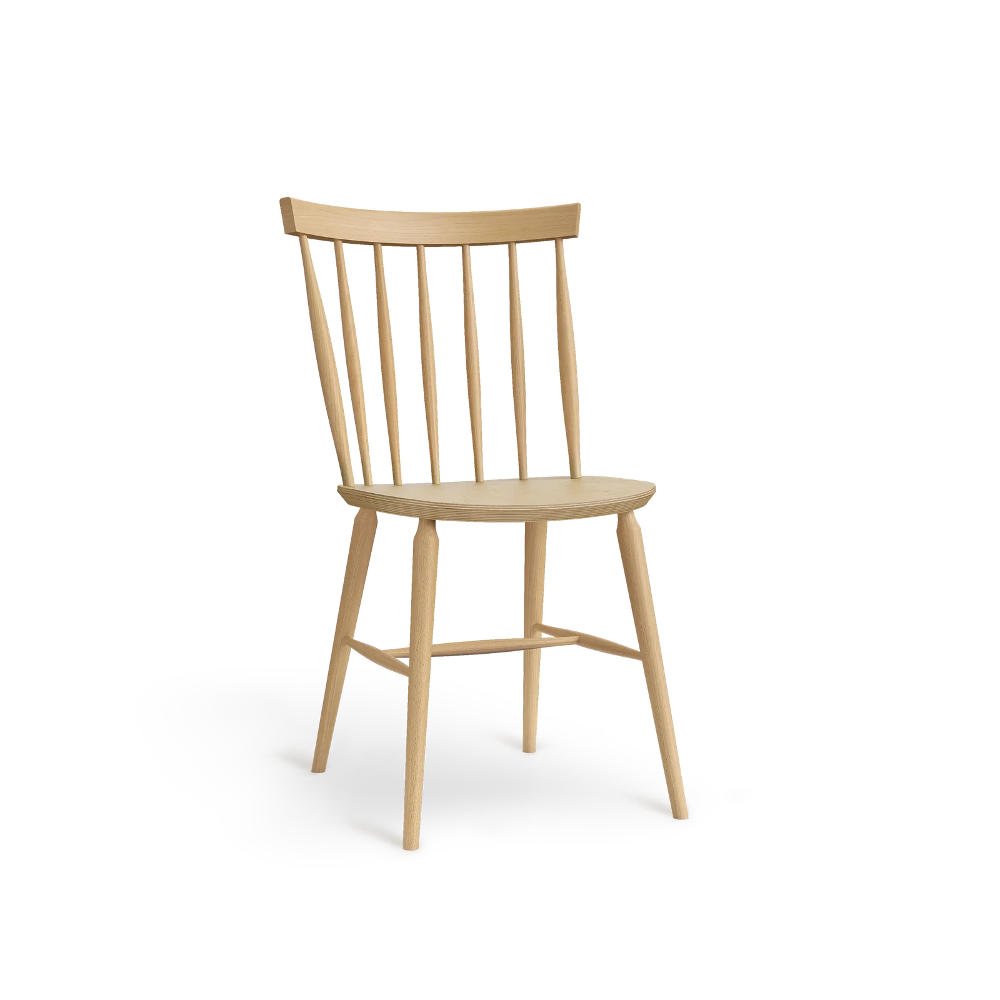

Kolekcje Paged
1 kolekcja · więcej wkrótce
Krzesła kawiarniane i restauracyjne
Antilla
Krzesło z giętego buku z charakterystycznym oparciem z toczonych prętów, zwieńczonych „grzebieniem". Siedzisko drewniane lub tapicerowane, wersja z podłokietnikami, część modeli można sztaplować.
Hokery barowe
Antilla hokery · WKRÓTCE
Hoker Antilla H-9850 (wys. 680 / 780 mm), buk, siedzisko drewniane lub tapicerowane.
Taborety
Antilla taboret · WKRÓTCE
Taboret Antilla C-9850 (wys. 680 / 780 mm), buk, bez oparcia.
Stoły i fotele
Kolejne kolekcje · WKRÓTCE
Stoły, fotele i kolejne rodziny Paged — w przygotowaniu.